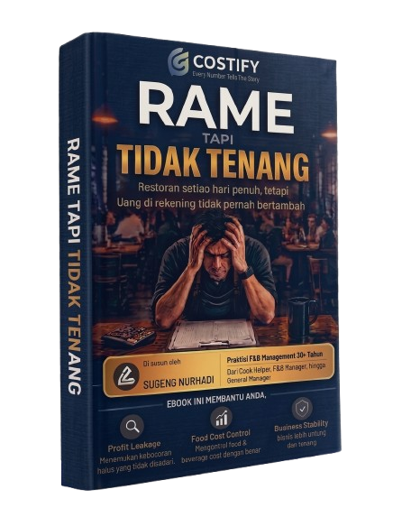

Omzet naik, profit tidak ikut naik
Penjualan terlihat bagus, tetapi setelah semua biaya dibayar, hasil akhirnya jauh dari yang diharapkan.
Banyak owner sibuk mengejar omzet,
tetapi tetap merasa uang tidak pernah
benar-benar tinggal.
Bisa jadi masalahnya bukan kurang ramai.
Ada kebocoran kecil yang terjadi setiap hari
dan perlahan menggerus profit.
E-book ini membantu Anda melihat ke mana saja uang bisa
“menghilang” di operasional, dengan bahasa sederhana.
Gratis · Langsung dikirim ke email Anda

Sebelum membaca e-book, lihat dulu apa yang sering terjadi di balik operasional restoran.
Coba lihat bisnis Anda bukan hanya dari berapa omzet yang masuk, tetapi apa yang terjadi setelah transaksi terjadi.
Penjualan terlihat bagus, tetapi setelah semua biaya dibayar, hasil akhirnya jauh dari yang diharapkan.
Waste, over-portion, expired, selisih stok, atau pembelian berlebih dapat menggerus margin sedikit demi sedikit.
Harga sering ditentukan berdasarkan kebiasaan atau pasar, sementara biaya aktual per porsi terus berubah.
Produk yang paling banyak terjual bisa saja memiliki margin terlalu tipis untuk menopang bisnis.
Anda mungkin hanya belum memiliki cara sederhana untuk melihat perjalanan setiap rupiah di dalam bisnis.
Panduan sederhana untuk membantu owner F&B melihat kembali apa yang sebenarnya terjadi di balik omzet, biaya, operasional, dan profit.
Mulailah mengikuti perjalanan uang dari transaksi sampai menjadi profit.
Ya. Tidak ada biaya untuk mengunduh e-book ini.
Cocok. Pembahasannya untuk semua pemilik usaha F&B yang ingin tahu ke mana uang bisnisnya pergi, dari satu outlet sampai beberapa cabang.
Setelah mengisi form, Anda mendapat tombol unduh langsung dan e-book juga dikirim ke email Anda.
Data hanya dipakai untuk mengirim e-book dan informasi Costify yang relevan. Anda bisa berhenti berlangganan kapan saja.
Over portion, over purchase, over production, waste yang tidak terkontrol, dan stok yang tidak konsisten: kebocoran yang terlihat sepele, tapi terjadi setiap hari. Baca Rame Tapi Tidak Tenang, lalu cocokkan dengan kondisi usaha Anda. Kalau tidak cocok, tidak ada yang Anda rugikan.
Isi data singkat di bawah (kurang dari 1 menit). E-book bisa Anda baca hari ini juga, gratis.